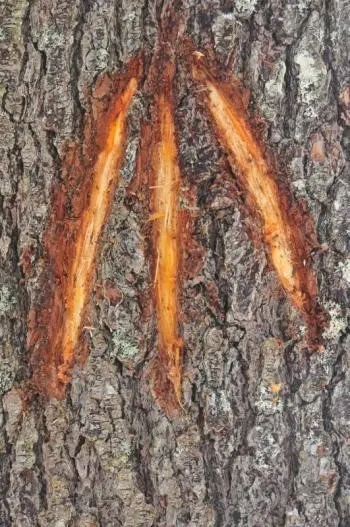

Image of "The King's Mark," Chesterfield NH Historical SocietyWhy "23" Matters: How & Why 23 Timber Co. Started
The number isn't branding trivia. It's a reference to a quiet act of practical resistance that shaped this country more than most people realize, and it still means something today.
Read the field note →